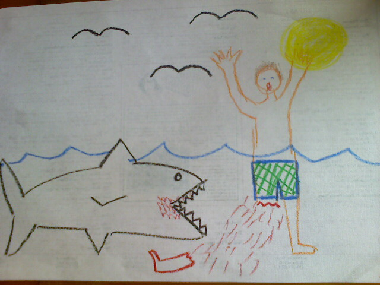
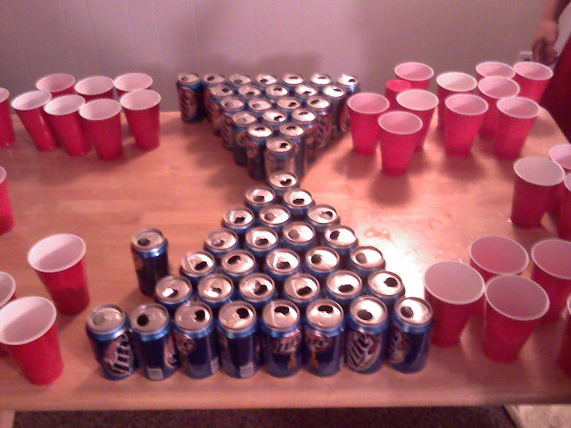
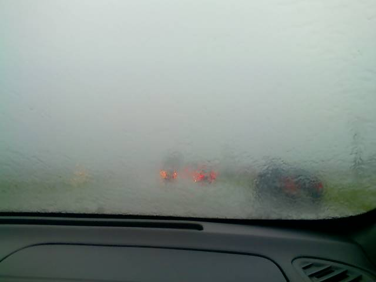

Spontaneous Beach Trip Weekend
This past weekend a gang of friends and I partook on a weekend getaway to Ocean City, Maryland. The last time I visited the beach was a month ago for the 4th of July but there was still plenty of adventure to be had the second time around.
Ahh! I don’t want to read all of this…
Friday, August 3rd
I got home from work an hour earlier than usual. This left some time for a quick nap before the 3 hour trek to Ocean City. Kristina and I left around 8pm stopping only for a bite to eat at Hardee’s. We made it to the shore by 11pm. Our friends Matt, Pammy, Mike, and Tim traveled in a separate car and met up with us 30 minutes later.
Matt said we could spend the night at a friend of a friend’s place but when we got to Ocean City we were told there wasn’t enough room. Being without a place to stay at the beach on a late Friday night in the beginning of August is a miserable experience. Cruising down Coastal Highway, looking for hotels with signs reading “vacancy”, was frustrating at best. When we did stumble upon the rare vacant hotel the rates were sky high, causing us to continue searching. Apparently the weekend of our trip was not a good time to look for a hotel at the last minute as there was a car show at the convention center and the worlds largest billfish tournament taking place in town. Our best bet to find a place to stay was to head out of Ocean City via route 50.
We eventually stumbled upon a motel just outside of town that had a vacant room and a price that everyone could agree on. The downside is we could only get one room and the motel policy stated no visitors were allowed. That didn’t stop us from piling six people into a tiny two person room. There was just enough room for three people to sleep horizontally on the “queen” size bed and the other three to curl up on the floor. The air smelled of mold like from inside a locker room and the water had a pungent odor. At least we had air conditioning and a mini refrigerator, though only one could be plugged in at a time. It was nearly 2:00am and we didn’t care about the grungy condition of our sleeping quarters. All we cared about was getting to the beach the next day.
Saturday, August 4th
After making it through the night without being found overstuffing a motel room, we quickly left and headed back into Ocean City for breakfast. The city has a plethora of eateries to choose from but the gang and I decided to stop at the popular Dough Roller restaurant. The prices were higher than I had wanted and the food wasn’t too great but it was a much-needed good start to our day. Matt drew this picture of Mike getting his leg bitten off by a shark in honor of Shark Week on the Discovery channel as we waited for our food.

It was around 11:30am and as we headed off to the beach when we realized there were absolutely no free parking spaces available. We ended up parking at a local sandwich shop named Billy’s Subs and hoped we wouldn’t get towed. Finally we made our way to the beach.
It was a hot and humid August day, perfect for playing in the ocean after laying out in the sun for a bit. The girls immediately plopped down on the beach to soak up some sun rays while the guys went frolicking in the water. I curled up into a fetal position and tried to catch a few winks because I need some sleep in order to be in a pleasant mood. The waves were rough and big making it more interesting than a usual day at the beach. Everybody got in the water at some point in the afternoon although I think Pammy only went up to her knees. Either way, everyone had fun.
Unlike Friday night, we had a place to stay all lined up for Saturday night but it wasn’t ready until after 2pm. Right around 2:30pm, dark rain clouds came through and blocked out the sun. We decided it was time to retreat indoors. Having a room with space to move around in was a welcome treat. Everyone showered up washing the grime from the motel room the night before and the salt water from the ocean right down the drain along with our anxiety. Finally everyone could relax and have a good time, at least this is when I felt like I could relax.
Half of the group went to hunt down a Quiznos 100 blocks away for some food. Kristina and I fell asleep on the living room couch for a quick catnap while Pammy read a book. Later we went out to a KFC/Taco Bell for some fast-food dinner and a chance to interact with other beach goers. At the restaurant were these four tweenage kids who thought the rub on tattoos from the vending machine were the hippest thing since the hula hoop. We laughed and made fun of them as we gobbled down our food. I got 7 soft tacos in anticipation of having another meal later on.
Later that night we broke out the beer pong table and playing cards. Kristina, Pammy, and myself played 31 while the others threw ping pong balls at each other and drank beer. It wasn’t the most exciting activity in the world, but it sure beat the night before.

After a while the drunkards were really drunk which was quite a spectacle to the non-drunkards. There was some puking over our 3rd story deck, a lot of peeing off the deck, and a rendition of the Macarena performed by the drunkards. In order to get them to do the dance, they wanted the non-drunkards to take a shot, which we agreed to, except we took shots of water. The drunkards were so trashed they didn’t even see us fill up our shot glasses under the sink while we slipped them some clear alcohol. To make sure they were none the wiser we made faces of anguish after tipping our glasses bottoms up. They totally fell for it and followed through with their end of the deal.
The night was a lot of fun and everyone got to sleep in much better accommodation’s compared to the night before.
Sunday, August 5th
We awoke to an overcast sky which killed the mood to go out on the beach. Instead, everyone meandered around the condo before we all went to Hooters for lunch. Again, the food wasn’t that great, but we had lots of stories to share from the night before which made it worth my while. Upon returning to our place, the drunkards immediately began attacking a 30-pack of Miller Lite while the non-drunkards packed and prepared to go home. Kristina, Pammy, and I left around 3pm while the drunkards were still partying on the deck.
On the ride home we ran into a severe thunderstorm with a torrent of down pouring rain. For the first time in my life, I heard the National Broadcasting System come on the radio warning us about the storm. Many people pulled over to the side of the road to wait it out, but we are young whipper snappers and decided to pull through. In the end everyone made it home safe and in one piece.

Short Version
- 3 Hour Car Drive
- Had to look for a hotel
- Found a tiny,disgusting one
- 6 people slept in a two person room
- Ate Dough Roller for breakfast
- Went to the beach
- Played card games or beer pong
- Slept in comfortable beds
- Ate at Hooters
- Drove home in the pouring rain
- The End

{kind=link}
{kind=link}
{kind=link}
You forgot how i got pulled over for not having my head lights on, and about the “over-hang”… oh and how the lifeguard called his section of the beach over to his stand and discuss how lazy he is and doesn’t want to save people from the rough waves by giving us a warning. Oh and how i got “fractured prune” donuts in Columbia. Love you smoochies
Reply
Yea, I can’t believe you forgot about being pulled over, and I even sent you a photo of it! Anyways how did you get my mobile pictures to look so good? Oh and also you forgot about the beach wedding and being a sour puse
Reply
Sea city annapolis beach wedding ceremonies ; seaside wedding party suggestions * guidelines to help you to your vacation spot marriage ceremony ; seaside weddings throughout Thailand: are usually satisfying for every person ;motels
Reply